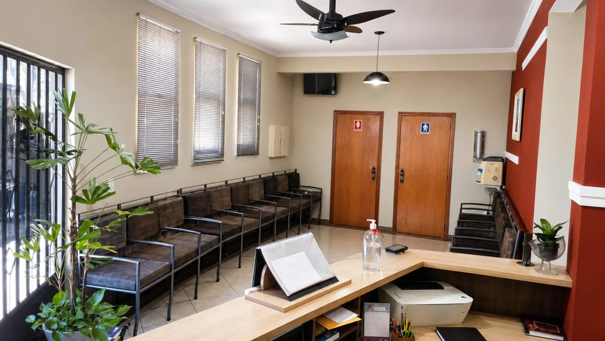
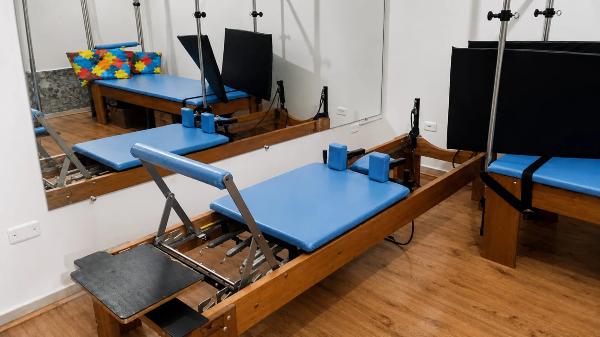
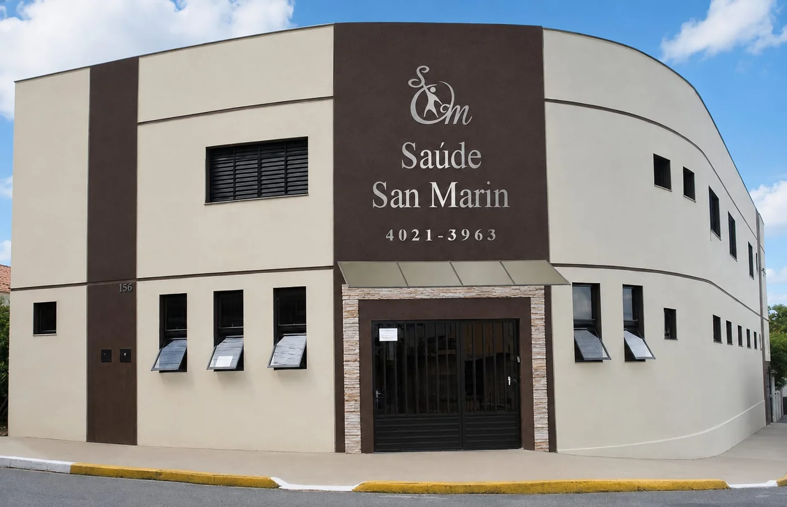
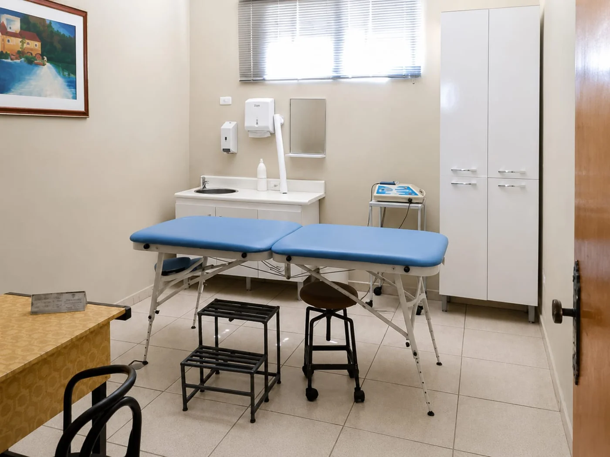
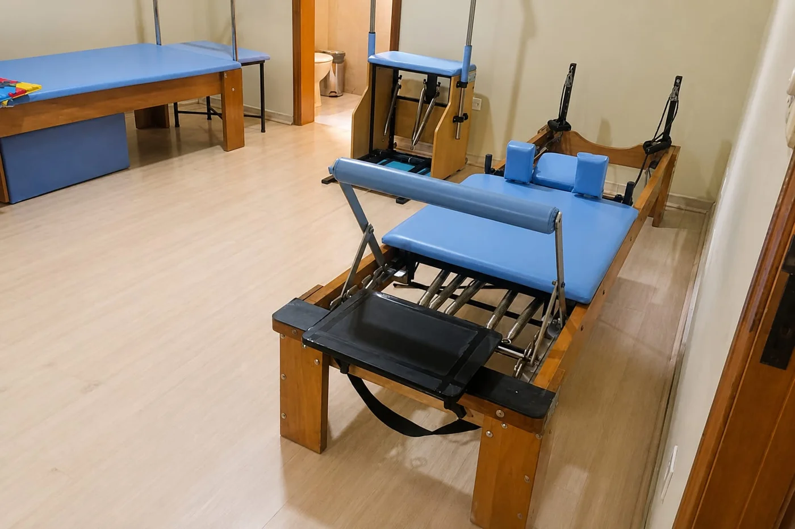
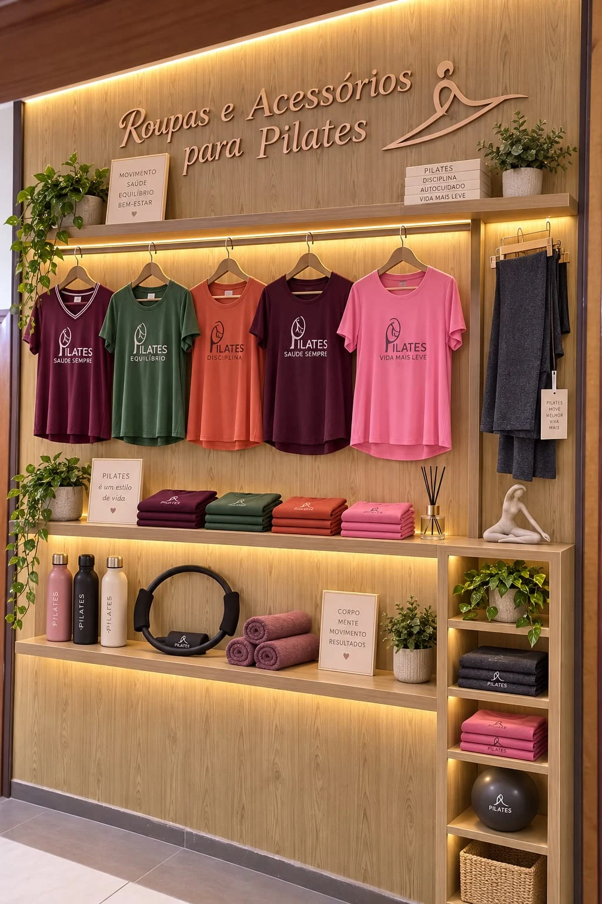

Saúde e reabilitação
Atenção à comunicação, à audição e ao movimento.
- Fisioterapia
- Fonoaudiologia
- Exames de audição
- Exame e terapia do processamento auditivo central
- Auriculoterapia
CUIDADO QUE ACOLHE. SAÚDE QUE CONECTA.
Diferentes especialidades, um mesmo cuidado: acolher você em cada etapa. Conheça a Saúde San Marin, em Salto.
Duas décadas de assistência à saúde
Uma história construída com cuidado e proximidade.

A CLÍNICA
Há duas décadas, a Saúde San Marin reúne profissionais de diferentes áreas para oferecer assistência à saúde com proximidade e atenção.
Nosso espaço acolhe quem busca cuidados com o corpo, a comunicação, a saúde emocional e a aprendizagem. Uma equipe integrada, em ambientes climatizados e higienizados, para receber você.
Conheça nossos ambientesESPECIALIDADES E SERVIÇOS
Encontre o atendimento que você procura.
Nossa equipe orienta sobre disponibilidade
e agendamento pelo WhatsApp.
Atenção à comunicação, à audição e ao movimento.
Cuidado com a saúde emocional e o desenvolvimento.
Um tempo para o movimento e para o autocuidado.

MOVIMENTO COM ATENÇÃO
Pilates clínico e fitness em um espaço dedicado à prática. Conheça o ambiente e converse com nossa equipe sobre as modalidades e os horários disponíveis.
Quero conhecer o PilatesNOSSO ESPAÇO
Conheça as instalações reais da clínica.
Ambientes climatizados e higienizados
para receber você.




A LOJA DA CLÍNICA
Roupas e acessórios para acompanhar seus momentos de Pilates e bem-estar.
Na sua visita à Saúde San Marin, conheça também nossa loja. Um espaço dentro da clínica para descobrir peças e acessórios para a sua rotina.
Consulte modelos, tamanhos, valores e disponibilidade com a equipe.
PARA PROFISSIONAIS
Salas para aluguel em sistema de coworking, com pacotes de horas ou período integral. Opções com e sem banheiro, a partir de R$ 20 por hora, com tudo incluso.
Consulte condições e disponibilidadeVAMOS CONVERSAR?
Fale com a equipe para escolher o atendimento
e consultar os horários disponíveis.
Estacionamento gratuito nas vagas ao redor da clínica, sujeito à disponibilidade.